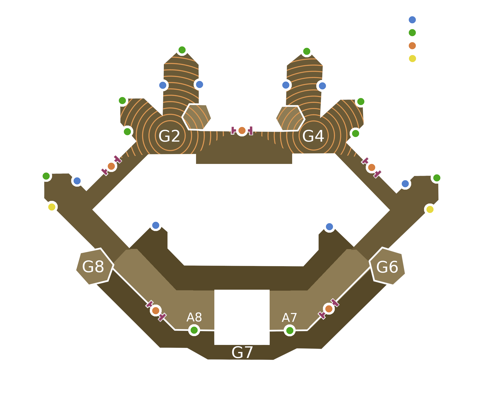

Invabot
Table of Contents
1 Documentation des rôles
Cette section a pour objectif de présenter les différents rôles utiles en invasion. Chaque rôle comporte des composantes indispensables, illustrées par le sigle suivant : (obligatoire). Afin de mieux maîtriser la répartition des rôles, il sera demandé aux joueurs d'évaluer leur pertinence pour chacun de ces rôles.
Un joueur peut s'estimer :
- Capable
- S'il répond à tous les critères (obligatoire)
- Opti
- S'il répond a tous les critères (obligatoire) ET (recommandé)
1.1 Artilleur
- Objectif
- Tuer les bombers, les tireurs, les artilleries ennemies et les trash mob, en respectant cet ordre de priorité.
- Arme principale
- Épée avec la compétence Leadership (obligatoire)
- Arme secondaire
- Bâton de feu/vie (recommandés)

Figure 1: Placement des artilleurs
1.2 Lancier (DPS débuff)
- Objectif
- Appliquer rend et weaken aux boss et les DPS
- Arme principale
- Lance avec Corrupted Bane (obligatoire) et Keenly Empowered ou Rogue (recommandés). Build lance (obligatoire)
- Arme secondaire
- Arc préféré, mais peut être une arme de CàC
- Armure
- Légère avec perks Sundering Javelin (obligatoire) Enfeebling Skewer (obligatoire) Fortifying Perforate (recommandés)
2 Concept :
Le bot
3 Configuration
La configuration du bot passera par un fichier json unique, contenant le corps des différents messages à transmettre ainsi que les adresses des Gdoc à lire.
{ "embeds": { "panneau": { "title": "Confirme ta séléction à l'invasion de", "color": 2003199, "description": "Réagis avec :ballot_box_with_check: à ce message **uniquement si tu es déjà dans le fort**. Attention, retourne vite en jeu, l'auto-AFK kick est rapide (2min). \n\n Si tu as réagi par erreur, merci de décocher ta réaction. :wink: \n\n*(Et si vous aussi vous pensez que bakhu est la meilleure guilde)*" }, "dm": { "title": "Dis nous tout !", "color": 2003199, "description": "Tu es inscrit en invasion, mais tu n'as pas renseigné **les rôles** que tu peux jouer. Il n'est donc par conséquent pas possible de t'assigner un poste automatiquement. Allez, file remplir [ce document](" }, "help": { "title": "Manuel d'utilisation d'invabot", "color": 2003199, "fields": [{"name": "Blue Team", "value": "Something", "inline" : "True"}] } }, "gdoc": { "url": "https://docs.google.com/spreadsheets/d/1vDZ_p6Bq2oyyY0CV1SQ0FBRtJoGbtiurM9cOQWHJ-qo/", "page_strat": "Strat", "page_roster": "Roster" } }
4 Utilitaires
4.1 Chargement de la config
Le chargement de cette config se fera pour l'instant une seule fois au démarrage du bot.
# Chargement de la config du bot import json with open('config.json', 'r') as datafile: config = json.load(datafile)
4.2 Chargement du token
# Chargement du token with open('bot.token', 'r') as datafile: token = datafile.read()
4.3 Identifiant
Il est nécessaire d'avoir un identifiant unique entre discord et le gdoc pour faire le lien. Discord gère les identifiants sous forme d'un entier appelé snowflake. Toutefois, il est difficilement accessible pour les joueurs, et ce sont les joueurs qui vont devoir renseigner leur identifiant unique sur le gdoc. Il est donc plus simple d'utiliser ici le discord tag, par exemple `Virgile#1234`.
Je propose ici une rapide fonction d'aide pour récupérer le dtag depuis un objet discord.User :
def dtag(user): return f'{user.name}#{user.discriminator}'
4.4 TODO Récupération du roster
import pandas as pd def get_roster(config): url = f"{config['gdoc']['url']}gviz/tq?tqx=out:csv&sheet={config['gdoc']['page_roster']}" return pd.read_csv(url).iloc[1:, 0:6].dropna().set_index('dtag')
Pseudo 0 1 2 3
dtag
Chopekk#1234 Chopekk DPS-Debuff Mousquet Heal Anti-trash
Virgile#2345 virgilio Mousquet Anti-trash Répa Arti
Virgile#3456 Tezig Lance-flamme Anti-trash Arc Arti
Carlito#4567 Slua Anti-trash Arti Répa Aucun
4.5 Récupération de la strat
def get_strat(config): url = f"{config['gdoc']['url']}gviz/tq?tqx=out:csv&sheet={config['gdoc']['page_strat']}" return pd.read_csv(url).iloc[0:5, 0:12]
Groupe 1 Groupe 2 Groupe 3 Groupe 4 Groupe 5 Groupe 6 Groupe 7 Groupe 8 Groupe 9 Groupe 10
0 Anti-Trash Arc Anti-Trash Arc Anti-Trash Mousquet Anti-Trash Mousquet Répa Lance-flamme
1 Heal Arc Heal Arc Heal Mousquet Heal Mousquet Répa Lance-flamme
2 DPS-Debuff Arc DPS-Debuff Arc DPS-Debuff Mousquet DPS-Debuff Mousquet Répa Lance-flamme
3 DPS-Debuff Arc DPS-Debuff Arc DPS-Debuff DPS-Debuff DPS-Debuff DPS-Debuff Répa Lance-flamme
4 Arti Arti Arti Arti Arti Arti Arti Arti Répa Lance-flamme
5 Bot avec discord.py
https://discordpy.readthedocs.io/en/stable/
Création du bot
import discord from discord.ext import commands bot = commands.Bot(command_prefix="!") msgs = {} msgs_ids = [] @bot.event async def on_ready(): print('We have logged in as {0.user}'.format(bot)) game = discord.Game("Venez chez Bakhu") await bot.change_presence(status=discord.Status.online, activity=game)
@bot.command() async def help(ctx, arg): embed = discord.Embed.from_dict(config["embeds"]["help"]) await ctx.channel.send(embed=embed)
Commande d'ajout du panneau d'inscription, sur lequel les joueurs dans le fort doivent se signaler sera `!inva nomVille`
@bot.command() async def inva(ctx, arg): """ Génére un tableau d'inscription dans le channel """ embed = discord.Embed.from_dict(config["embeds"]["panneau"]) embed.title += f' {arg}' embed.set_footer(text=ctx.author.name, icon_url = ctx.author.avatar_url) msg = await ctx.channel.send(embed=embed) await msg.add_reaction('☑') author_id = dtag(ctx.author) msgs[author_id] = msg.id global msgs_ids msgs_ids += [msg.id]
La commande de demande de composition sera la suivante `!comp`. La fonction associée doit récupérer le message panneau à partir de l'identité de l'appelant. Puis, récupérer la liste des joueurs qui ont réagi sur le panneau.
@bot.command() async def comp(ctx): """ Génére une composition d'armée """ author_dtag = dtag(ctx.author) channel = ctx.channel # On s'assure que l'utilisateur qui demande le calcul ait déjà fait la commande principale if author_dtag not in msgs: await channel.send(f"Pas de messages trouvés pour {author_dtag}. Commencez par utiliser la commande :\n $inva nomVille") return # Récupération du message avec les réacs msg_id = msgs[author_dtag] main_msg = await channel.fetch_message(msg_id) # Récupération de la liste des users selected = await main_msg.reactions[0].users().flatten() selected_tags = [dtag(u) for u in selected][1:] selected_snow = {t: u.id for t, u in zip(selected_tags, selected)} # Récupération des donénes du Gdoc roster roster = get_roster(config) # Joueurs séléctionnés n'ayant pas rempli le Gdoc not_registered = [u for u in selected_tags if u not in roster.index] # Filtrage du roster avec les joueurs séléctionnés roster = roster.filter(items=selected_tags, axis=0) # Récupération de la strat strat = get_strat(config) print(roster) print(strat) await channel.send(roster)
5.1 DM des joueurs qui n'ont pas renseigné leurs rôles
Cette phase n'est pas absolument nécessaire, mais elle permet de notifier directement en message privé les utilisateurs qui se signalent dans le fort mais qui n'ont pas correctement rempli le gdoc. Cela leur laisse potentiellement le temps de le faire avant que le lead demande le calcul de la composition du groupement de défense.
@bot.event async def on_reaction_add(reaction, user): # On vérifie que la réaction est sur un message panneau if reaction.message.id not in msgs_ids: return if user == bot.user: return # Récupération des donénes du Gdoc roster df = get_roster(config) if dtag(user) not in df.index: embed = discord.Embed.from_dict(config["embeds"]["dm"]) embed.description += f'{config["gdoc"]["url"]}) ***!***' try: await user.send(embed=embed) except discord.errors.HTTPException as e: pass else: # Plus tard, ajouter l'utilisateur aux tryhard s'il n'y est pas déjà pass
5.2 Run
bot.run(token)
Identification des Rôles :
roles = {} for index, row in strat.iterrows(): for v in row: if v in roles: roles[v] += 1 else: roles[v] = 1 print(roles)
5.3 Récupération des joueurs
5.3.1 Récupération du roster
import pandas as pd def get_roster(): page= 'Roster2' url = f"https://docs.google.com/spreadsheets/d/1vDZ_p6Bq2oyyY0CV1SQ0FBRtJoGbtiurM9cOQWHJ-qo/gviz/tq?tqx=out:csv&sheet={page}" return pd.read_csv(url).iloc[1:, 0:9].dropna().set_index('dtag') print(get_roster())
5.3.2 Filtrage des joueurs
keys_to_extract = [] a_subset = {key: players[key] for key in keys_to_extract}